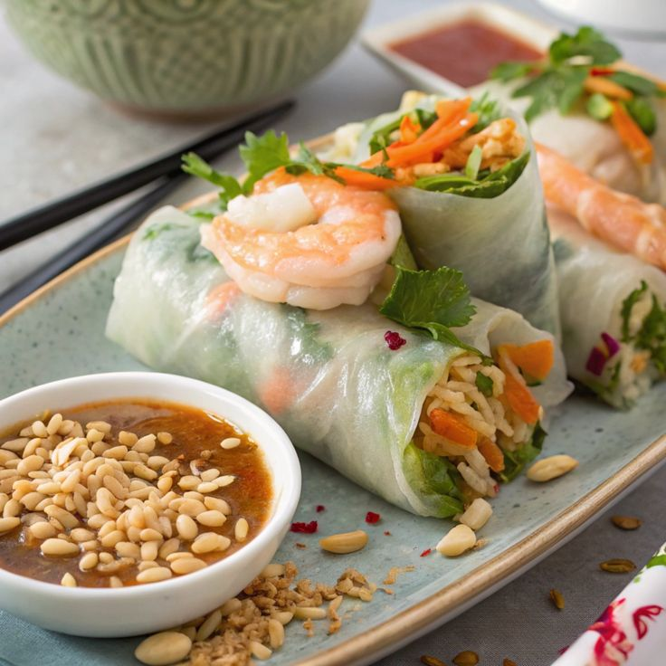

1. Vietnamese Spring Rolls (Gỏi cuốn)

Ingredients:
- Rice paper wrappers
- Rice vermicelli noodles
- Shrimp, pork, or tofu
- Fresh herbs (mint, cilantro, Thai basil)
- Lettuce, cucumber, bean sprouts
- Peanut dipping sauce
Instructions: Soften rice paper in warm water, layer ingredients, roll tightly, and serve with peanut sauce.